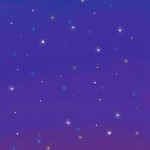
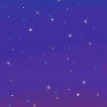

Projects
I mainly write in Python. You can see some of my coursework projects as a math student below. Here we go.
Tutor Optimization and Scheduling using ILP
It minimizes the number of tutor needed in cram school when recruiting tutors, and make a learning schedule for classes based on the minimum number of tutors, using Integer Linear Programming. The basic structure of modelling optimization problems are: the variables to be determined, the objective function, and the constraints. This is one of the constraints in this scheduling problem.
# kendala3: setiap kelas tidak boleh masuk 2 hari berurutan
for c in range(nc):
for k in range(nk[c]):
for h in range(5):
m += y[c][k][h] + y[c][k][h+1] <= 1Vigenere Cipher: Encryption and Cryptanalysis
It encrypts and do cryptanalysis to a given Sundanese text utilizing Vigenere cipher. One step of the cryptanalysis process is to count the coincidence values for each row in the ciphertext matrix. Here's the function, x is the row.
# Fungsi untuk menghitung nilai koinsiden untuk setiap baris pada matriks
def countings (x):
count_table = {} # Variabel yg menyimpan kemunculan huruf
freq_table = {} # Variabel yg menyimpan frekuensi kemunculan huruf
n = 0 # Variabel yg menyimpan jumlah huruf dalam teks sampel
spi = 0 # Variabel jumlah kuadrat dari setiap nilai pi
ranger = [i for i in range(27)]
for i in range(27):
count_table[i] = x.count(i)
n = n + count_table[i]
for i in range(27):
freq_table[i] = count_table[i]/n
pi = freq_table[i]**2
spi += pi
return spiUnconstrained Nonlinear Programming
It solves unconstrained nonlinear optimization problems and provides several tools or methods to do so. One of the methods is Steepest Decent, so peek at the function.
def steepest_decent(Q, b, x0, maxiter = 500, eps = 1E-4):
df = lambda x: (Q @ x) - b
x = x0
k = 0
while k < maxiter:
alpha = (df(x) @ df(x)) / (df(x) @ Q @ df(x))
x = x - alpha * df(x)
k = k + 1
error = np.linalg.norm(df(x))
if error < eps:
break
print('x0 =', x0)
print('iterasi ke-', k)
print('x =', x)
print('error =', error)
print()Coding Theory: Syndrome Decoding
It decodes code in fininte field using the code's syndrome. To avoid confusion, the 'code' here is not the coding code, but the encoding-decoding-related code (in which it is numbers). To be able to use the syndrome, we need to find the syndrome of the code. And this function is for generating syndrome look-up table for the cosets from basis H in the Galois field ffield.
def generateLUT(H, ffield):
n = len(H[0])
n_k = len(H)
cLeader = np.array([0 for i in range(n)])
cLeader = ffield(cLeader)
synd = cLeader @ np.transpose(H)
syndromes = []
cosLeds = []
syndromes.append(synd)
cosLeds.append(cLeader)
p = np.asarray(syndromes)
syndMaxSize = ffield.order**n_k
while(len(p) < syndMaxSize):
cLeader = generateNext(cLeader, ffield)
synd = cLeader @ np.transpose(H)
isIn = isArrInArrays(p, synd)
if not isIn:
syndromes.append(synd)
cosLeds.append(cLeader)
p = np.asarray(syndromes)
return np.asarray(cosLeds), p
cLeaders, synd = generateLUT(dualBase(C, GF), GF)
print("coset leader | syndrome")
for i in range(len(synd)):
print(cLeaders[i], " | ", synd[i])I made an .exe file for this project, you can try to make an executable too using the setup.py. However, there's a python notebook file for a better view of the project.
Coding Theory: Nonlinear Codes
It generates different types of nonlinear code, such as Preparata code and Nordstrom-Robinson code. For example, generating Preparata code of oder m would look like this.
def preparata(m):
n2 = 2**(2*m - 1)
# himpunan vektor u dan v
U = product([1, 0], repeat=n2)
U = np.reshape(list(U), (-1, n2))
V = U
P = []
for i in range(len(U)):
for j in range(len(V)):
# bobot u dan v genap
if (sum(U[i][:]) % 2 == 0) and (sum(V[j][:]) % 2 == 0):
a = 0
b = 0
# jumlahan indeks tempat munculnya digit 1 di u dan v adalah sama
for k in range(n2):
if U[i][k] == 1:
a = a + k
if V[j][k] == 1:
b = b + k
if a == b:
f = 0
g = 0
h = 0
for l in range(n2):
if U[i][l] == 1:
f = f + l**3
g = g + l
if V[j][l] == 1:
h = h + l**3
if f + (g**3) == h:
p = np.concatenate((U[i], V[j]))
P.append(p)
return P
If this looks boring, check out my awesome artworks.
 
